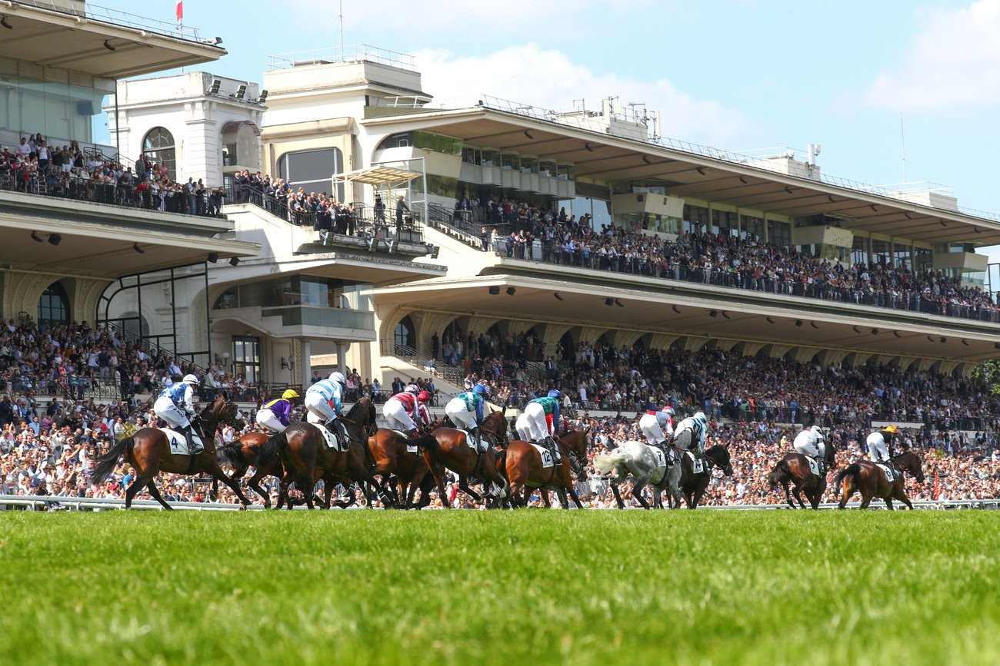

Auteuil reúne cuatro Grupos 1 en una sola tarde de obstáculos
El domingo es la reunión grande del otoño en la butte Mortemart: Prix Maurice Gillois, Prix Cambacérès y Prix La Haye Jousselin, entre otras, con Métronomique defendiendo corona.

En Francia se corren nueve Grupos 1 de obstáculos al año, todos en Auteuil. Cuatro de ellos caen en la misma jornada, la del domingo, lo que convierte la reunión en la de mayor nivel del calendario en la butte Mortemart.
La tarde arranca a las 12:48 con el Prix Fondeur (Grupo 3), el Grand Steeple-Chase de los cinco años en versión oficiosa. El lote llega muy relevado y con dos suplementados, Neverchangedoctor e It's Win O'Clock, cuyos entornos tuvieron que pagar para inscribirlos a última hora. Del primero se dice que es un caballo de Grand Steeple de Paris.
A las 13:58 llega el Prix Maurice Gillois (Grupo 1), donde los de cuatro años eligen su mejor steeple-chaser del otoño. Métronomique, el rey de la primavera, intentará conservar la corona ante las potrancas Mélisse du Mathan y Victrix du Mesnil. Para Mélisse du Mathan podría ser la última carrera en Francia antes de marcharse a Irlanda. Teen Spirit y Montana Dream buscarán alterar el orden establecido.
A las 14:33, el Prix Cambacérès (Grupo 1) enfrenta a los mejores saltadores de vallas de tres años. Huron Bleu, Varsovie y Navy du Seuil, ya campeones en ciernes, se medirán con jóvenes de mucho cartel como Irrésitiblement, Baghera du Berlais, Saint Savin y Magnum Valley.
A las 15:15 se corre el Prix La Haye Jousselin, el gran momento del otoño en Auteuil.
Por Martín Larrañeta